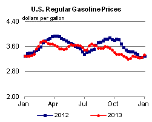

Released: January 3, 2014
Next Release: January 8, 2014
Shifting production, demand patterns alter oil markets in 2013
U.S. crude oil production increased 1.0 million barrels per day (bbl/d) in 2013, marking the fifth consecutive year of growth in production that had previously been on a downward trajectory since 1985. Shifting production patterns and a continuing rise in emerging economies' share of global demand are changing the pattern of crude oil and refined products trade flows around the globe.
U.S. crude oil production rose to its highest level in 24 years, exceeding net imports of crude oil in several weeks for the first time in nearly two decades. Significant expansion of pipeline and railroad infrastructure facilitated movement of new production to refining centers and alleviated the existing bottleneck at Cushing, Oklahoma. With more light sweet crude able to flow directly from production regions to the coasts, U.S. imports of light sweet crude oil were largely displaced by new production from the Bakken, Permian, and Eagle Ford tight oil formations. As a result, U.S. Gulf Coast crude oil grades, which had previously traded near global price levels, fell to record discounts to international benchmarks in November and December.
{kind=link}
North America dominated global liquid fuels production growth in 2013 (Figure 1), with production rising by 1.5 million bbl/d in the United States and Canada even as it fell by 0.8 million bbl/d in the rest of the world. While several countries outside of North America saw their production increase, widespread disruptions in several key member countries of the Organization of the Petroleum Exporting Countries (OPEC) and decisions made by other OPEC producers together brought the rest of world's total oil production down. The largest production growth outside of North America occurred in Russia, which added only 0.1 million bbl/d.
As the United States reduced imports, more crude oil became available to the global market, helping to offset significant supply disruptions elsewhere in the world and to stabilize prices (Figure 2). West Texas Intermediate (WTI) spot prices averaged $98 per barrel (bbl) for the year, up 4% from 2012 and the highest annual average since 2008. The Brent spot price averaged $109/bbl, down 3% from 2012.
Unplanned disruptions of global crude oil production reached nearly 3.5 million bbl/d at the start of November, more than 1 million bbl/d above their average level during the first quarter of the year. Despite these gaps in production, the price effect was modest compared with other recent disruptions of similar volume, as rising production in North America and elevated Saudi production continuing past the summer peak use of oil to generate electricity in that country helped restrain price increases. Yet, global spare production capacity in August reached its lowest level since 2008. Libyan outages — which at their peak in late October accounted for almost half of global disruptions — partially overlapped with the seasonal low in global refinery demand.
{kind=link}
While global crude oil prices were relatively stable, prices in the United States saw more movement. In addition to the narrowing differential between mid-continent and Gulf Coast crude prices, the closely watched Brent-WTI differential ranged from $23/bbl in mid-February to under $1 in mid-July, when U.S. refiners raised crude runs to near record high levels. After refinery runs declined due to autumn maintenance, and under the weight of continuing production growth, the spread widened again, reaching $15/bbl by the end of November.
With greater U.S. crude price discounts, more refineries ran at high utilization rates. High refinery output, combined with muted domestic demand for most of the year, resulted in record U.S. petroleum product exports of 3.7 million bbl/d in third-quarter 2013, up 0.6 million bbl/d compared with the same period in 2012.
Global demand neared a long-expected milestone in 2013 when total liquid fuels consumption by countries outside the Organization for Economic Cooperation and Development (OECD) almost surpassed that of OECD member countries for the first time. OECD members' demand grew slightly in 2013, reversing the downward trend seen in six out of the previous seven years. During the same time, non-OECD demand rose by 1.1 million bbl/d. China alone accounted for almost 35% of global demand growth and eclipsed the United States to become the world's largest importer of crude oil. However, the decreased U.S. crude imports mentioned above played an even larger role than increased Chinese imports.
In 2014, EIA expects U.S. crude oil production to rise by another 1.0 million bbl/d. Along with U.S. production growth, the possible return of Libyan crude supply and ambitious Iraqi production plans mean that global balances could ease this year, as evidenced by EIA's projection of a 29.4-million-bbl/d call on OPEC production and global inventories in 2014, 0.9 million bbl/d below the 30.3-million-bbl/d average call during 2013. The projected call for 2014 is below OPEC's 30-million-bbl/d production quota, which has been in place since 2009. How key OPEC member countries choose to address this situation will determine market balances. Of course, other major uncertainties are always present in any assessment of oil markets. Three such uncertainties include production in Libya remaining offline longer than anticipated, additional unforeseen production outages emerging, or Iranian exports changing. While the recent announcement of agreement on an interim Joint Plan of Action by Iran and the P5+1 countries is unlikely to result in any appreciable change in Iran's oil exports in the near term, further developments in 2014 could change the outlook.
In the United States, changes will continue farther downstream. Refiners and midstream companies have spent the past three years investing and adjusting to cope with growing volumes of light sweet crude. This challenge is expected to persist in 2014 because the glut of crude oil that once mostly affected the mid-continent hit the Gulf Coast in December 2013. Growing volumes of crude oil in the Gulf Coast market will likely keep Light Louisiana Sweet prices at WTI levels plus pipeline tariff. With U.S. prices discounted to those abroad, producers will continue to ship crude to the East Coast of the United States and Canada, where refiners have an incentive to displace higher-cost globally-traded light sweet crude streams. Such flows could further ease global market balances as other crude streams are diverted away from North America.
Gasoline and diesel fuel prices both increase
The U.S. average retail price of regular gasoline increased six cents to $3.33 per gallon as of December 30, 2013, three cents higher than last year at this time. Prices increased in all regions of the nation, with the largest increase coming in the Midwest, where the price was up 10 cents to $3.26 per gallon. On the Gulf Coast, the price was up six cents to $3.12 per gallon, and the Rocky Mountain price was up five cents to $3.10 per gallon. The West Coast price was $3.53 per gallon, four cents higher than last week, and the East Coast price rose three cents to $3.41 per gallon.
The national average diesel fuel price increased three cents to $3.90 per gallon, two cents lower than last year at this time. Prices increased in all regions of the nation, with the Midwest, Rocky Mountain, and West Coast prices all increasing four cents, to $3.89 per gallon, $3.89 per gallon, and $4.03 per gallon, respectively. The East Coast price was $3.94 per gallon and the Gulf Coast price was $3.79 per gallon, both two cents higher than last week.
Propane inventories fall
U.S. propane stocks fell by 1.5 million barrels to end at 45.9 million barrels last week, 20.8 million barrels (31.2%) lower than a year ago. Midwest regional inventories dropped by 0.9 million barrels and Gulf Coast inventories decreased by 0.5 million barrels. Rocky Mountain/West Coast inventories decreased by 0.1 million barrels, and East Coast inventories were essentially unchanged. Propylene non-fuel-use inventories represented 7.7% of total propane inventories.
Residential heating fuel prices increase
Residential heating oil prices increased by over 5 cents per gallon to reach a price of $4.04 per gallon during the period ending December 30, 2013. This is almost 5 cents per gallon higher than last year's price at this time. Wholesale heating oil prices increased 4 cents per gallon last week to almost $3.23 per gallon.
The average residential propane price increased 4 cents per gallon last week to nearly $2.80 per gallon, almost 54 cents per gallon higher than the same period last year. Wholesale propane prices increased by 5 cents per gallon to $1.69 per gallon as of December 30, 2013.
Text from the previous editions of This Week In Petroleum is accessible through a link at the top right-hand corner of this page.
|  | |||||||
 |
|||||||
| Retail Data | Change From Last | Retail Data | Change From Last | ||||
| 12/30/13 | Week | Year | 12/30/13 | Week | Year | ||
| Gasoline | 3.331 | Heating Oil | 4.036 | ||||
| Diesel Fuel | 3.903 | Propane | 2.799 | ||||
|
|||||||||||||||||||||||||||
| *Note: Crude Oil Price in Dollars per Barrel. | |||||||||||||||||||||||||||
| Stocks Data | Change From Last | Stocks Data | Change From Last | ||||
| 12/27/13 | Week | Year | 12/27/13 | Week | Year | ||
| Crude Oil | 360.6 | Distillate | 119.1 | ||||
| Gasoline | 220.7 | Propane | 45.901 | ||||